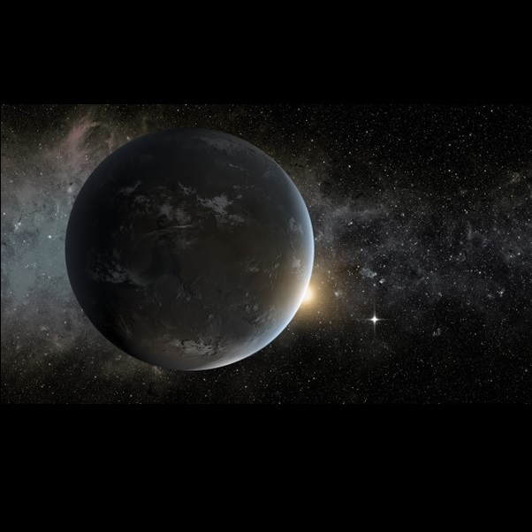

K2-18 b was first discovered in 2015. The distance between it and its sun is about 1 seventh the distance from Earth to our sun, and it has a mass of roughly 9 Earths. It orbits the cool dwarf star K2-18.
The James Webb Space Telescope has discovered carbon-bearing molecules, or molecules containing carbon, such as methane and carbon dioxide, on the exoplanet. Carbon is a key building block for life because of its chemical properties. Another building block is hydrogen, which has the potential to be in the atmosphere of K2-18 b.
The exoplanet is in what is known as the habitable zone. It’s a term that means the right distance from its star that liquid water can form on planets’ surfaces. K2-18 b has the potential to have water, and maybe even oceans.

With three of the main key ingredients, it is very possible that life could be present, however it has not yet been detected. There is also a possibility of the planet having dimethyl sulphide, or DMS, a chemical only produced on Earth by life.
Without the James Webb Space Telescope, this much information could not have been discovered. “This result was only possible because of the extended wavelength range and unprecedented sensitivity of Webb, which enabled robust detection of spectral features with just two transits. For comparison, one transit observation with Webb provided comparable precision to eight observations with Hubble conducted over a few years and in a relatively narrow wavelength range.” (Webb Discovers Methane, Carbon Dioxide in Atmosphere of K2-18 b, 2023) said Nikku Madhusudhan, an astronomer at the University of Cambridge.
< Back to Homepage